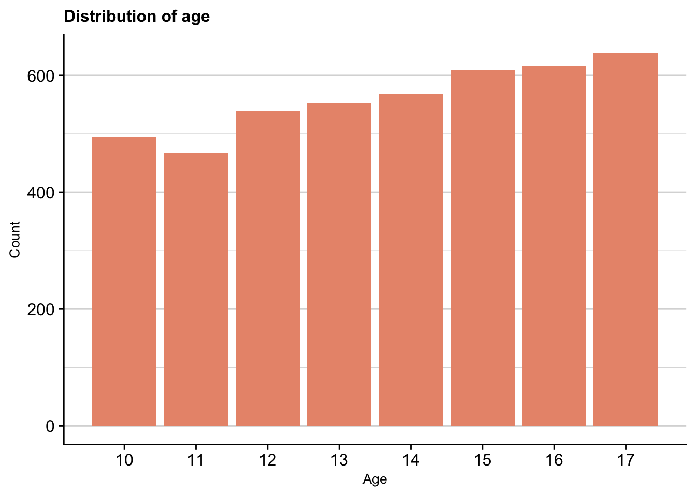
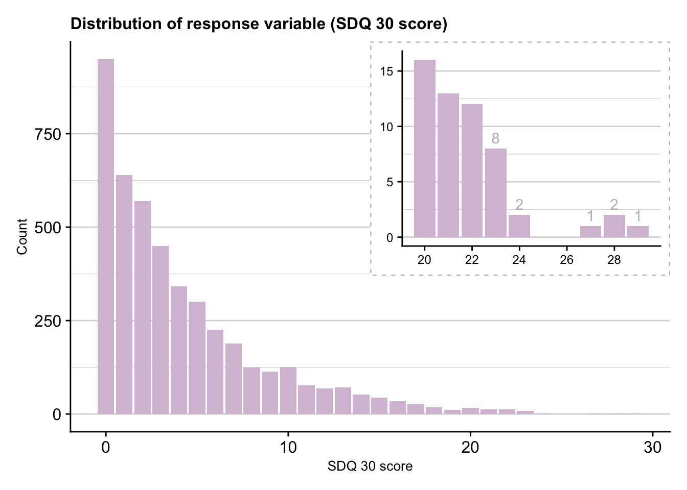
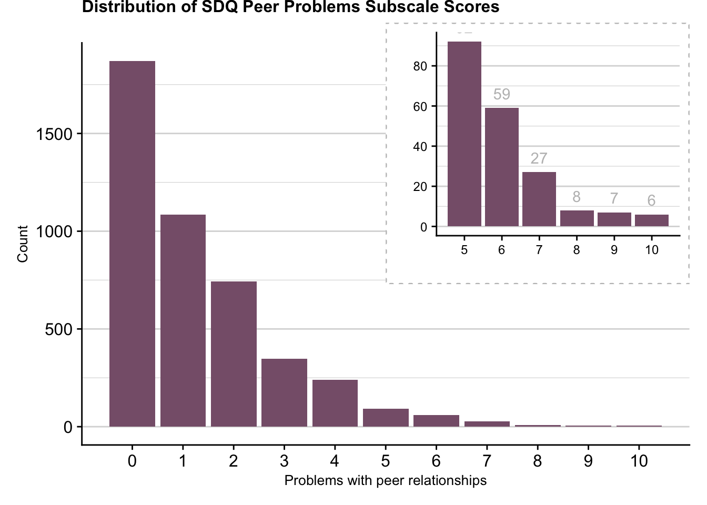
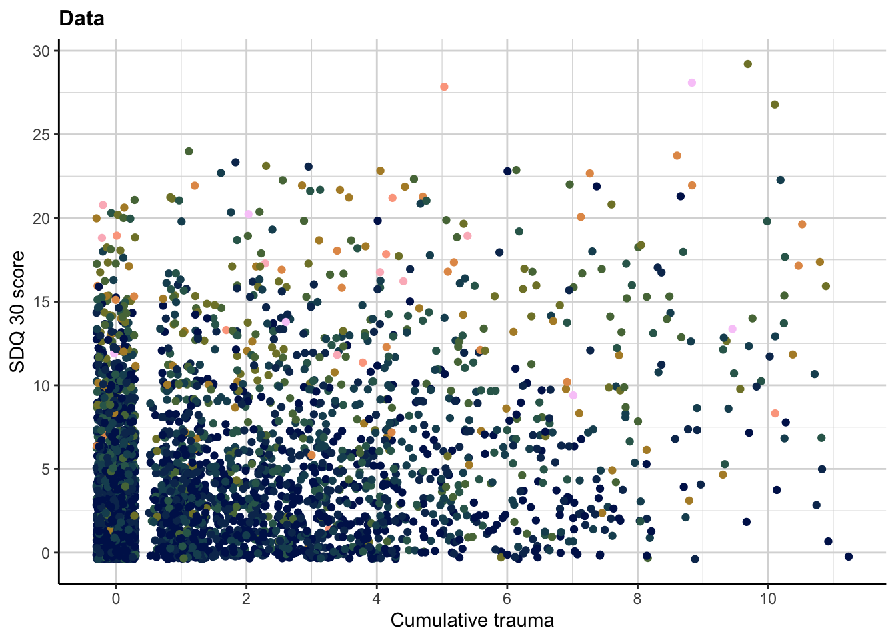
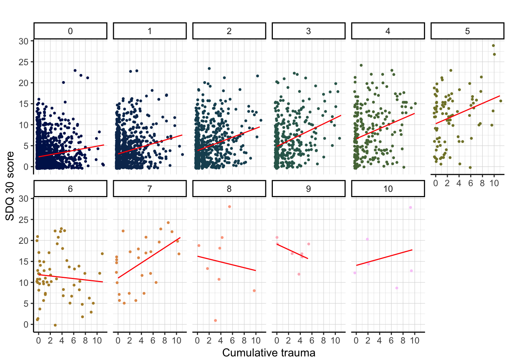

3 Basic Data Summaries and Explorations
summaries <- adolescents %>%
group_by(SDQ_peer) %>%
summarise(n = n(), mean_30 = round(mean(as.numeric(SDQ_30)),3), sd_30 = round(sd(as.numeric(SDQ_30)),3), median_30=median(as.numeric(SDQ_30)),
mean_ct = round(mean(cumulative_trauma), 3), sd_ct = round(sd(cumulative_trauma),3), median_ct = round(median(cumulative_trauma), 3))
summaries_overall <- adolescents %>%
summarise(mean_30 = round(mean(as.numeric(SDQ_30)),3), sd_30 = round(sd(as.numeric(SDQ_30)),3), median_30=median(as.numeric(SDQ_30)),
mean_ct = round(mean(cumulative_trauma), 3), sd_ct = round(sd(cumulative_trauma),3), median_ct = round(median(cumulative_trauma), 3),
mean_PP = round(mean(as.numeric(SDQ_peer)),3), sd_PP = round(sd(as.numeric(SDQ_peer)),3), median_pp = round(median(SDQ_peer), 3))
write_csv(summaries, "summary_table.csv")3.1 Age Distribution
age_graph <- ggplot(adolescents, aes(x=age)) +
geom_bar(fill="darksalmon") +
theme_cowplot() +
background_grid(major="y", minor="y") +
scale_x_continuous(breaks = c(10,11,12,13,14,15,16,17)) +
theme(legend.position = "none", plot.title = element_text(size=12), axis.title = element_text(size=10)) +
labs(x="Age", y="Count", title="Distribution of age")
ggsave("age.png", plot=age_graph, units = "cm", width = 11, height = 8.5, dpi = "retina",
device = "png", path = here())
age_graph
## [1] 13.71996## [1] 2.2792493.2 Exploring used variables and their distribution
3.2.1 SDQ 30 - depedent variable
response_graph <- ggplot(adolescents, aes(x=SDQ_30)) +
geom_bar(fill="thistle") +
theme_cowplot() +
background_grid(major="y", minor="y") +
theme(legend.position = "none", plot.title = element_text(size=12), axis.title = element_text(size=10)) +
labs(x="SDQ 30 score", y="Count", title="Distribution of response variable (SDQ 30 score)")
SDQ_high_graph <- ggplot(subset(adolescents, SDQ_30 > 19), aes(x=SDQ_30)) +
geom_bar(fill="thistle") +
geom_text(data=subset(adolescents, SDQ_30 > 22), stat='count', aes(label=..count..), vjust=-0.5, color="grey") +
theme_cowplot() +
background_grid(major="y", minor="y") +
theme(legend.position = "none",
axis.title = element_blank(), axis.text = element_text(size=9),
plot.background = element_rect(fill="white", size=0.8, color="gray", linetype=3)) +
scale_x_continuous(breaks = c(20, 22, 24, 26, 28, 30)) +
scale_y_continuous(breaks=c(0, 5, 10, 15))
response_graph <- response_graph + inset_element(SDQ_high_graph, left = 0.5, bottom = 0.4, right = 1, top = 1)
ggsave("response_graph .png", plot=response_graph, units = "cm", width = 14, height = 10, dpi = "retina",
device = "png", path = here())
response_graph
3.2.2 Cumulative trauma - independent variable
trauma_graph <- ggplot(adolescents, aes(x=cumulative_trauma)) +
geom_bar(fill="#CC6666", width=0.1) +
theme_cowplot() +
background_grid(major="y", minor="y") +
theme(legend.position = "none", plot.title = element_text(size=12, face="bold"), axis.title = element_text(size=10)) +
labs(x="Cumulative trauma", y="Count", title="Distribution of cumulative trauma across the sample") +
scale_x_continuous(breaks = c(0,1,2,3,4,5,6,7,8,9,10,11))
high_trauma_graph<- ggplot(subset(adolescents, cumulative_trauma >= 5), aes(x=cumulative_trauma)) +
geom_bar(fill="#CC6666", width=0.09) +
theme_cowplot() +
background_grid(major="y", minor="y") +
theme(legend.position = "none",
axis.title = element_blank(), axis.text = element_text(size=9),
plot.background = element_rect(fill="white", size=0.8, color="gray", linetype=3)) +
scale_x_continuous(breaks = c(5, 6,7,8,9,10,11))
trauma_graph <- trauma_graph + inset_element(high_trauma_graph, left = 0.5, bottom = 0.4, right = 1, top = 1)
ggsave("trauma_graph.png", plot=trauma_graph, units = "cm", width = 14, height = 10, dpi = "retina",
device = "png", path = here())## Warning: position_stack requires non-overlapping x intervals
## Warning: position_stack requires non-overlapping x intervals## Warning: position_stack requires non-overlapping x intervals
## Warning: position_stack requires non-overlapping x intervals
trauma_graph_violin <- ggplot(adolescents %>% mutate(dummy=1), aes(x=dummy, y=cumulative_trauma)) +
# violin plot
geom_half_violin(aes(x=dummy+0.06), fill="#CC6666", alpha =0.9, color=NA, side = "r") +
# single subject data points (1 per participant) with horizontal jitter
geom_point(aes(x=dummy-0.1), position = position_jitter(width =0.04, height = 0.1), shape=16, size = 1) +
# boxplot of distribution (median, 1st and 3rd quartile)
geom_boxplot(width = .08, outlier.shape = NA) +
# adding plot of mean and SEM
stat_summary(fun = mean, geom = "point", size=1, shape = 16,
position = position_nudge(+.06), colour = "black") +
stat_summary(fun.data = mean_se, geom = "errorbar",
position = position_nudge(+.06), colour = "black", width = 1, size = 1) +
# correcting labels
labs(x = '', y = 'Cumulative Trauma (0-12)', title = 'Distribution of cumulative trauma scores') +
# aesthetical changes
theme_cowplot() +
theme(axis.text.y = element_blank(),
axis.ticks.y = element_blank(),
axis.title.x = element_text(size=11),
axis.text.x = element_text(size=10),
aspect.ratio = 1,
plot.title = element_text(face="bold", size=12)) +
scale_y_continuous(breaks = c(0,1,2,3,4,5,6,7,8,9,10,11, 12), limits = c(-0.2,12)) +
scale_x_continuous(limits = c(0.85, 1.45)) +
coord_flip()
ggsave("trauma_graph_violin.png", plot=trauma_graph_violin, units = "cm", width = 10, height = 10, dpi = "retina",
device = "png", path = here())
trauma_graph_violin
3.2.3 Peer problems score
peers_graph_overall <- ggplot(adolescents, aes(x=SDQ_peer, fill=peer_problems)) +
geom_bar(width=0.9, fill=c("#875F79")) +
theme_cowplot() +
background_grid(major="y", minor="y") +
theme(legend.position = "none", plot.title = element_text(size=12, vjust=6), axis.title = element_text(size=10)) +
labs(x="Problems with peer relationships", y="Count", title="Distribution of SDQ Peer Problems Subscale Scores") +
scale_x_continuous(breaks = c(0,1,2,3,4,5,6,7,8,9,10))
peers_graph_high <- ggplot(subset(adolescents, SDQ_peer > 4), aes(x=SDQ_peer)) +
geom_bar(fill="#875F79", width=0.9) +
geom_text(stat='count', aes(label=..count..), vjust=-0.8, color="grey") +
theme_cowplot() +
background_grid(major="y", minor="y") +
theme(legend.position = "none", plot.title = element_text(size=12), axis.title = element_text(size=10), axis.text = element_text(size=9), plot.background = element_rect(fill="white", size=0.8, color="gray", linetype=3)) +
labs(x=" ", y=" ") +
scale_x_continuous(breaks = c(5,6,7,8,9,10)) +
scale_y_continuous(breaks=c(0, 20, 40, 60, 80))
peers_graph <- peers_graph_overall + inset_element(peers_graph_high, left = 0.5, bottom = 0.4, right = 1, top = 1.05)
ggsave("peer_graph.png", plot=peers_graph, units = "cm", width = 14, height = 10, dpi = "retina",
device = "png", path = here())
peers_graph
3.3 First plotting of the data
distribution <- ggplot(adolescents, aes(x=cumulative_trauma, y=as.numeric(SDQ_30), color=as.factor(SDQ_peer))) +
geom_jitter(width=0.3) +
scale_color_scico_d(palette = 'batlow', begin=0, end=1) +
theme_classic() +
background_grid(minor = "xy") +
labs(x="Cumulative trauma", y="SDQ 30 score", title="Data", color="Peer problems") +
theme(plot.title = element_text(size=12, face="bold"), legend.position = "none") +
#guides(col = guide_legend(nrow = 1)) +
scale_y_continuous(breaks=c(0, 5, 10, 15, 20, 25, 30)) +
scale_x_continuous(breaks = c(0, 2, 4, 6, 8, 10, 12))
ggsave("data_graph.png", plot=distribution, units = "cm", width = 15, height = 10.5, dpi = "retina",
device = "png", path = here())
distribution
distribution_facet <- ggplot(adolescents, aes(x=cumulative_trauma, y=as.numeric(SDQ_30), color=as.factor(SDQ_peer))) +
geom_jitter(width=0.3, size=0.65) +
scale_color_scico_d(palette = 'batlow', begin=0, end=1) +
theme_classic() +
background_grid(minor = "xy", size.major=0.2, size.minor=0.1) +
labs(x="Cumulative trauma", y="SDQ 30 score", title="", color="Peer problems") +
theme(plot.title = element_text(size=12, face="bold"), legend.position = "none") +
#guides(col = guide_legend(nrow = 1)) +
scale_y_continuous(breaks=c(0, 5, 10, 15, 20, 25, 30)) +
scale_x_continuous(breaks = c(0, 2, 4, 6, 8, 10, 12)) +
facet_wrap(~SDQ_peer, nrow = 2) +
geom_smooth(method=glm, se=FALSE, color="red", size=0.5)
ggsave("data_graph_facet.png", plot=distribution_facet, units = "cm", width = 17, height = 7.5, dpi = "retina",
device = "png", path = here())## `geom_smooth()` using formula 'y ~ x'## `geom_smooth()` using formula 'y ~ x'